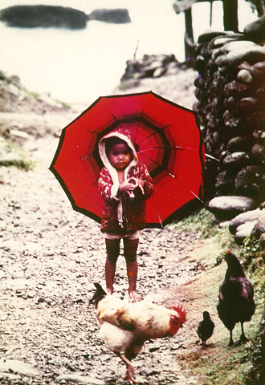
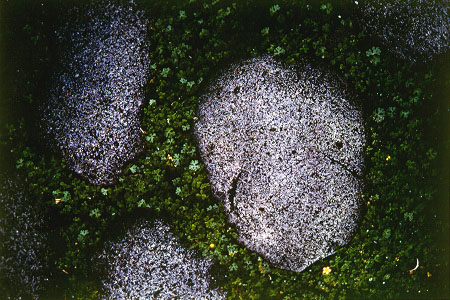

義助慰安婦 —— 李敖百件珍藏義賣藝術品（第56件） 品 名： E6. 謝春德雞和石（兩件一組） 預估價： 6 萬 成交價： （保留） 說 明： 二十年前李敖就注意本土攝影藝術，這兩張作品是攝影家謝春德舉行攝影展時賣給李敖的。一幅是小孩與雞，非常本土，民家的味道非常傳神；另一幅有四塊石頭，最重要的是石頭中間有小黃花，搭配得非常靈巧。英國詩人布雷克詩中曾有這麼一句：我心裡有一隻老虎在聞玫瑰。照片中的小黃花雖然那樣的脆弱，和這麼大的石頭陪襯在一起，卻正是這種詩境。  
二十年前李敖就注意本土攝影藝術，這兩張作品是攝影家謝春德舉行攝影展時賣給李敖的。一幅是小孩與雞，非常本土，民家的味道非常傳神；另一幅有四塊石頭，最重要的是石頭中間有小黃花，搭配得非常靈巧。英國詩人布雷克詩中曾有這麼一句：我心裡有一隻老虎在聞玫瑰。照片中的小黃花雖然那樣的脆弱，和這麼大的石頭陪襯在一起，卻正是這種詩境。